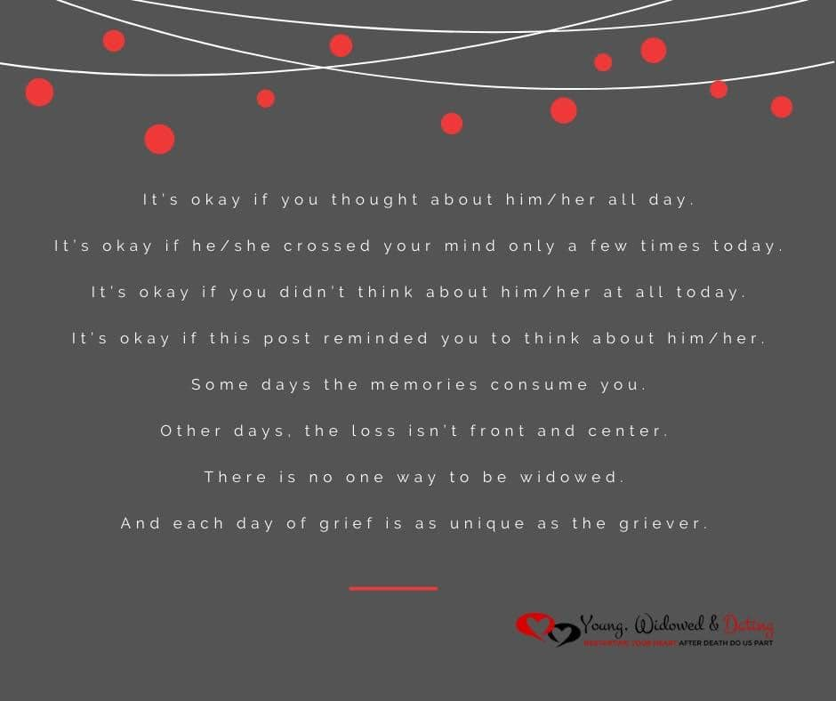

Inspirational quotes

Elder Neal A. Maxwell made this interesting observation, “Though we miss the departed righteous so much here, hundreds may feel their touch [in the afterlife]. One day, those hundreds will thank the bereaved for gracefully forgoing the extended association with choice individuals here, in order that they could help hundreds there. In God’s ecology, talent and love are never wasted.”